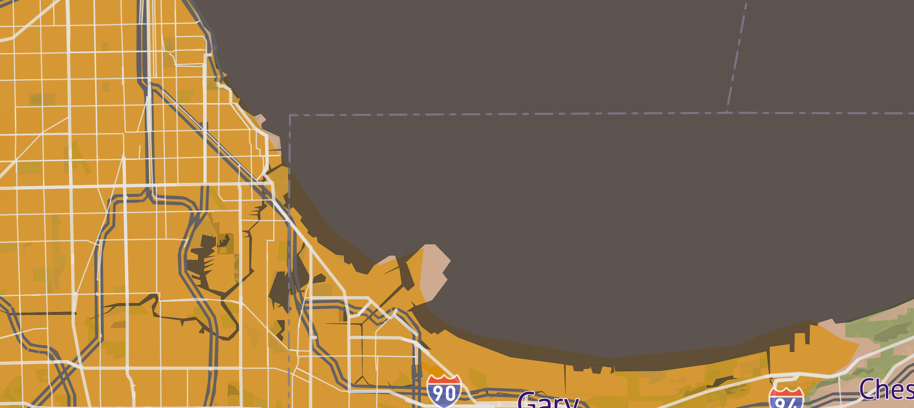
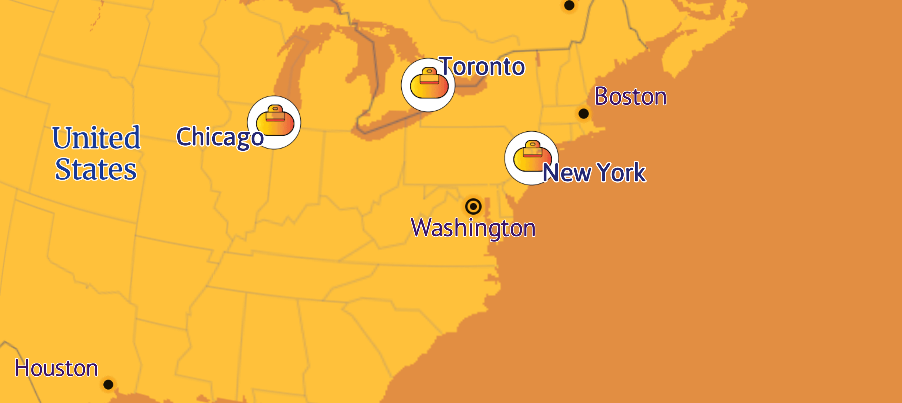
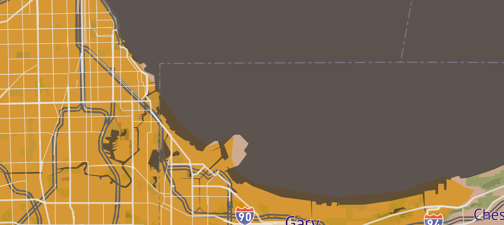
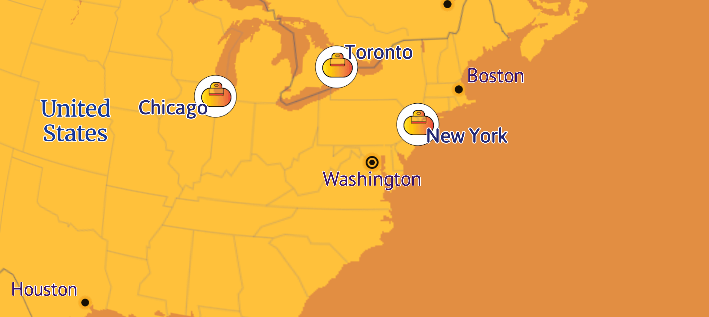

Saaho
Information about my Mapbox studio basemap.

My Map was inspired from the movie Saaho to display in gallery exhibit at local art museum .


In this map, orange shaped semi rounded pictures are called as orange secret box. I represented this box as major city icons because antagonist in this movie will be searching for these box in different cities.
Let's see what a few different places look like with the basemap..
 



Here the base land color will represent the building visuals in saaho cinematic city and cremish buildings from the protagonist skin tone and minor areas are in red color which illustrate blood on the face.
This blend of dust theme which look like sand cylone visuals.
This combination is visuals of huge fires and the balck smoke effect coming out from the fire.
I have used few icons for restraunts, pubs, education, golf course, town hall, hospetal, parking. And if you pan through the map in the next page, you can experiance my design view.
Play around the full map.